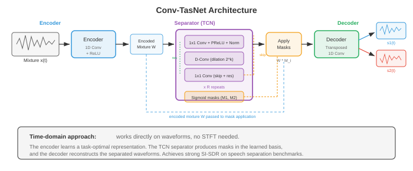
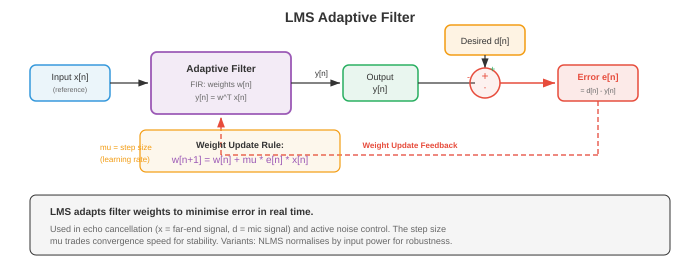

源分离与降噪¶
一句话总结：从混合音频里把各路声源单独抠出来、把噪声抹掉，涵盖 ICA、NMF、时频掩码、波束成形，到 Conv-TasNet、SepFormer 等深度分离网络与自适应降噪算法。
源分离与降噪要做的是从混合音频里恢复出各个独立信号 —— 这就是计算版的"鸡尾酒会问题". 本节覆盖独立成分分析 (ICA)、非负矩阵分解 (NMF)、时频掩码、波束成形、深度学习分离网络 (Conv-TasNet、SepFormer)、语音增强以及自适应降噪.
-
想象你站在一个热闹的鸡尾酒会里。 几十个人同时在讲话，音乐在放，杯子在碰撞，但你仍然可以专注在某一段对话上，听得清清楚楚。 这种令人惊叹的能力就是 鸡尾酒会问题 (cocktail party problem) (Cherry, 1953) —— 人的听觉系统毫不费力就能搞定，机器却觉得难到离谱。 本节介绍那些试图挑战这一问题的算法：把混合音频分离成独立源、消掉不想要的噪声、在恶劣环境下增强语音。
-
文件 01 里的信号处理基础 (STFT、频谱图、滤波器组) 是这里每一种方法的底子。 第 02 章的矩阵分解技术 (NMF、ICA、SVD) 提供了经典工具箱。 第 06 章的深度学习架构 (CNN、RNN、注意力) 和第 04/05 章的概率论则支撑着现代方法。

- 问题的形式化：一个混合信号 \(x(t)\) 在一个或多个麦克风上被观测到。 混合信号 (最简单情形下) 是 \(C\) 个源信号之和:
-
其中 \(s_c(t)\) 是第 \(c\) 个源信号，\(n(t)\) 是背景噪声。 目标是从 \(x(t)\) 恢复出各个 \(s_c(t)\). 在单麦克风情形下这是严重欠定的：一个方程，\(C\) 个未知数。 必须引入额外假设 (统计独立、频谱结构、学到的先验) 才能让问题可解。
-
在频域 (通过文件 01 的短时傅里叶变换 (Short-Time Fourier Transform, STFT)) 中，混合信号变成:
- 许多分离方法在时频域工作，为每个源估计一个 掩码 (mask) \(M_c(t, f) \in [0, 1]\)，然后用 \(\hat{S}_c(t, f) = M_c(t, f) \cdot X(t, f)\) 恢复源。 理想二值掩码 (Ideal Binary Mask, IBM) 在源 \(c\) 主导某个时频格子时设 \(M_c(t, f) = 1\)，否则设 0. 理想比值掩码 (Ideal Ratio Mask, IRM) 是它的软化版:
-
独立成分分析 (Independent Component Analysis, ICA) 是麦克风数量等于或超过源数量时的经典方法。 ICA (见第 02 章) 求一个线性解混矩阵 \(W\)，使得 \(\hat{s} = Wx\)，其中恢复出的源 \(\hat{s}\) 在统计上尽可能独立。 关键假设是源信号非高斯且相互独立 —— 这对语音和音乐通常成立。
-
对于多麦克风的瞬时混合模型 \(x = As\) (其中 \(A\) 是混合矩阵), ICA 通过最大化输出的非高斯性 (FastICA 用负熵) 或最小化互信息，得到 \(W \approx A^{-1}\). ICA 在受控环境下工作良好，但在以下情况会失效：混合涉及卷积 (房间混响)、源比麦克风多、或者独立性假设不成立。
-
非负矩阵分解 (Non-negative Matrix Factorisation, NMF) 把幅度谱 \(V \in \mathbb{R}_+^{F \times T}\) 分解成两个非负矩阵的乘积 (见第 02 章):
-
其中 \(W \in \mathbb{R}_+^{F \times K}\) 是一个包含 \(K\) 个频谱基向量的字典，\(H \in \mathbb{R}_+^{K \times T}\) 包含它们随时间的激活系数。 非负约束是物理动机：幅度是非负的，声音是相加叠加的。
-
用于源分离时，NMF 为每个源学习独立的字典：\(W_{\text{speech}}\) 捕捉语音的频谱模式 (共振峰结构), \(W_{\text{noise}}\) 捕捉噪声模式。 混合信号被分解为 \(V \approx W_{\text{speech}} H_{\text{speech}} + W_{\text{noise}} H_{\text{noise}}\)，每个源通过掩码恢复。 NMF 用乘法更新最小化，代价函数可以是 Frobenius 范数或 KL 散度 (Kullback-Leibler divergence, KL):
- 波束成形 (beamforming) 利用麦克风阵列的空间信息。 当一个源信号以不同延迟到达不同麦克风 (因为空间排布不同)，这些延迟可以用来增强某一方向来的信号，同时抑制其他方向。

- 延时相加波束成形 (delay-and-sum beamforming) 是最简单的做法。 如果目标源相对于阵列的角度是 \(\theta\)，那么麦克风 \(m\) 上的时延为 \(\tau_m(\theta) = d_m \sin \theta / c\)，其中 \(d_m\) 是麦克风位置，\(c\) 是声速。 波束成形器的输出把各麦克风信号对齐再相加:
-
来自目标方向的信号相干相加，来自其他方向的信号非相干相加，从而实现空间滤波。 阵列几何决定了空间分辨率：阵列越大，波束越窄。
-
最小方差无失真响应 (Minimum Variance Distortionless Response, MVDR) 波束成形优化权重，使总输出功率最小，同时无失真地通过目标方向的信号:
- 其中 \(\Phi_{nn}\) 是噪声空间协方差矩阵，\(\mathbf{d}(\theta)\) 是方向 \(\theta\) 的导向矢量。 闭式解为:
-
MVDR 通过使用估计的噪声协方差来适应噪声环境，比延时相加提供更好的干扰抑制。 它被广泛用在助听器、智能音箱和电话会议系统里。
-
深度学习做源分离 显著提升了性能，尤其是在经典方法束手无策的单麦克风情形下。 通用范式是：对混合信号编码，用神经网络估计掩码或源表示，再解码恢复各个源。
-
深度聚类 (deep clustering) (Hershey et al., 2016) 把每个时频格子嵌入到一个高维空间，使得同一源的格子彼此接近，不同源的格子彼此远离。 一个双向长短期记忆网络 (Long Short-Term Memory, LSTM) (见第 06 章) 把每个 T-F 格子 \((t, f)\) 映射到嵌入 \(v_{t,f} \in \mathbb{R}^D\). 训练目标为:
-
其中 \(V\) 是嵌入矩阵，\(Y\) 是源归属的独热矩阵。 乘积 \(VV^T\) 是相似度矩阵 (两个格子的嵌入有多相似)，而 \(YY^T\) 是理想的相似度 (同源为 1，异源为 0). 推理时对嵌入做 K-均值聚类，得到二值掩码。
-
Conv-TasNet (Luo and Mesgarani, 2019) 完全在时域工作，绕开 STFT. 它由三部分组成:

-
编码器 (Encoder)：一个一维卷积把混合波形的短片段映射到隐表示。 对于混合信号 \(x \in \mathbb{R}^T\)，编码器输出 \(w = \text{ReLU}(U \ast x) \in \mathbb{R}^{N \times L}\)，其中 \(U\) 是可学习的基 (类似 STFT 的基，但从数据里学到), \(N\) 是基函数数量，\(L\) 是片段数量。 编码器的核大小和步长 (一般是 2 ms 和 1 ms) 决定了时间分辨率。
-
分离器 (Separator)：一个 时序卷积网络 (Temporal Convolutional Network, TCN) 处理编码后的混合信号，输出 \(C\) 个掩码。 TCN 堆叠了膨胀的一维深度可分离卷积 (来自第 08 章的高效卷积)，组成若干块，膨胀因子按 \(1, 2, 4, \ldots, 2^{B-1}\) 指数递增，重复 \(R\) 次。 这带来非常大的感受野，同时计算保持高效。
-
解码器 (Decoder)：一个转置一维卷积 (带一个学到的基 \(V\)) 把每个掩码后的表示转回时域：\(\hat{s}_c = V^T (M_c \odot w)\).
-
Conv-TasNet 显著超过基于频谱图的方法，因为学到的编码器-解码器基能捕捉到 STFT 幅度丢失的信息 (特别是相位).
-
双路循环神经网络 (Dual-Path RNN, DPRNN) (Luo et al., 2020) 处理分离中长序列建模的难题。 它不是用单个循环神经网络 (Recurrent Neural Network, RNN) 或 TCN 处理整段编码序列，而是把序列切成有重叠的块，沿两条路径应用 RNN：一条 块内 (intra-chunk) 路径 (建模每块内部的局部模式) 和一条 块间 (inter-chunk) 路径 (建模跨块的全局模式). 这样每个维度上 RNN 的序列长度从 \(L\) 降到 \(\sqrt{L}\):
-
其中 \(k\) 标块索引，\(n\) 标块内位置。 块内 LSTM 在固定 \(k\) 时沿 \(n\) 处理；块间 LSTM 在固定 \(n\) 时沿 \(k\) 处理。
-
SepFormer (Subakan et al., 2021) 把双路框架里的 RNN 换成了 Transformer (见第 07 章). 块内 Transformer 用自注意力捕捉局部依赖，块间 Transformer 捕捉全局依赖。 多头注意力能建模长程依赖而不受梯度消失问题困扰 (见第 06 章)，这让 SepFormer 在长录音上特别有效。 SepFormer 在 WSJ0-2mix 基准上达到了最先进水平。
-
置换不变训练 (Permutation Invariant Training, PIT) 解决了监督式源分离里的一个根本问题：标签分配的歧义。 如果网络有两个输出 (对应两个说话人)，哪个输出应该对应哪个说话人？没有天然的顺序。 PIT 对所有可能的分配都算一次损失，取最小的那个:
-
其中 \(\mathcal{P}\) 是 \(\{1, \ldots, C\}\) 的所有置换集合，\(\ell\) 是单源损失 (通常是尺度不变信号失真比，SI-SDR). \(C = 2\) 时只有 2 种置换；\(C = 3\) 时有 6 种。 对更大的 \(C\)，用匈牙利算法可以高效算出。
-
尺度不变信号失真比 (Scale-Invariant Signal-to-Distortion Ratio, SI-SDR) 是源分离的标准评测指标:
-
其中 \(\hat{s}\) 是估计的源，\(s\) 是真值。 SI-SDR 对估计的整体尺度不敏感 —— 这是个可取的性质，因为绝对音量不如分离质量重要。 SI-SDR (以 dB 为单位) 越高越好。 目前最先进的系统在 WSJ0-2mix 上大约达到 20-22 dB 的 SI-SDR 提升。
-
音乐源分离 (music source separation) 把一段音乐录音分成各个音轨：人声、鼓、贝斯和其他乐器。 这样就能做各种应用，比如卡拉 OK (去人声)、混音 (调整乐器音量) 以及转写 (一次分析一件乐器).
-
Open-Unmix (Stoter et al., 2019) 是一个参考基线，用一个 3 层双向 LSTM 在幅度 STFT 域里为每个源预测软掩码。 它对每个源用一个独立模型分别处理。 简单但有效，Open-Unmix 在 MUSDB18 上确立了可复现的基准。
-
Demucs (Defossez et al., 2019; 2021 更新为 Hybrid Demucs) 用 U-Net 架构 (见第 08 章) 直接在波形上操作。 编码器通过带步长的卷积压缩混合信号，解码器通过转置卷积配合跳跃连接把它展开回来，每个源有自己的解码器头。 Hybrid Demucs 结合了时域和频域处理：编码器有并行的时域和 STFT 分支，特征在进入解码器之前融合。 这样既能抓住精细的时间细节，又能抓住频谱结构。
-
Demucs 在 MUSDB18 上取得了最先进的分离质量，特别是在人声分离上。 它的 U-Net 架构让人想到第 08 章的图像分割架构，把分离问题看作一种"音频分割".
-
主动降噪 (Active Noise Cancellation, ANC) 通过产生一个反噪声信号来抵消不想要的声音，利用相消干涉。 想想降噪耳机：麦克风采集环境噪声，ANC 系统生成反相版本，合成信号 (噪声 + 反噪声) 理想情况下相消归零。
-
物理原理很简单：如果噪声是 \(n(t)\)，在空间同一点产生 \(-n(t)\) 就得到寂静：\(n(t) + (-n(t)) = 0\). 挑战在于反噪声必须在时间、幅度和相位上精确对齐。 哪怕一点小误差，都会留下残余噪声或伪影。
-
前馈式 ANC (Feedforward ANC) 用一个参考麦克风，在噪声到达听者之前先采到它。 系统有时间处理噪声并生成反噪声。 参考信号通过一个自适应滤波器，其输出从误差麦克风 (贴近听者) 处采到的噪声中减去。 这对可预测的宽带噪声 (发动机嗡鸣、风扇噪声) 效果很好。
-
反馈式 ANC (Feedback ANC) 只用一个位于听者耳朵处的误差麦克风。 系统从残余信号 (听者实际听到的) 估计噪声并调整反噪声。 反馈式 ANC 更简单 (不需要参考麦克风)，但带宽受限，而且可能不稳定。
-
自适应滤波 (adaptive filtering) 是 ANC 背后的数学引擎。 滤波器系数必须持续适应变化的噪声环境。 最常见的算法是 最小均方 (Least Mean Squares, LMS) 滤波器。

- LMS 算法：一个有限冲激响应 (Finite Impulse Response, FIR) 滤波器，系数为 \(\mathbf{w} = [w_0, w_1, \ldots, w_{L-1}]^T\)，处理参考信号 \(\mathbf{x}(n) = [x(n), x(n-1), \ldots, x(n-L+1)]^T\). 输出是 \(y(n) = \mathbf{w}^T \mathbf{x}(n)\)，误差是 \(e(n) = d(n) - y(n)\) (其中 \(d(n)\) 是期望/主信号)，权重更新为:
-
其中 \(\mu\) 是步长 (学习率). 这是在均方误差 \(E[e^2(n)]\) 上做的一步随机梯度下降 (Stochastic Gradient Descent, SGD)，用瞬时梯度估计 \(-2 e(n) \mathbf{x}(n)\) 代替真梯度 (见第 03 章的梯度下降和第 06 章的 SGD).
-
步长 \(\mu\) 控制着收敛速度与稳态误差之间的权衡。 太大，滤波器会振荡或发散；太小，适应会太迟钝。 稳定条件是 \(0 < \mu < 2 / (\lambda_{\max})\)，其中 \(\lambda_{\max}\) 是输入自相关矩阵 \(R = E[\mathbf{x}\mathbf{x}^T]\) 的最大特征值。
-
归一化 LMS (Normalised LMS, NLMS) 用输入功率对步长做归一化，让收敛不受信号电平影响:
-
其中 \(\epsilon\) 是小的正则化常数，防止除零。 NLMS 比 LMS 收敛得更可靠，因为等效步长会随输入功率自适应。
-
递归最小二乘 (Recursive Least Squares, RLS) 是一种收敛更快的替代方案，最小化加权最小二乘代价 \(\sum_{k=1}^{n} \lambda^{n-k} e^2(k)\)，其中 \(\lambda \in (0, 1]\) 是遗忘因子。 RLS 维护逆自相关矩阵的估计并递归更新，得到最优收敛速度，代价是每个采样点 \(O(L^2)\) 的计算量 (LMS 是 \(O(L)\)).
-
降噪与语音增强 (noise reduction and speech enhancement) 目标是提升含噪录音里语音的音质和可懂度。 与源分离 (分离多路不同源) 不同，语音增强专门针对"语音加噪声"这一情形，从含噪观测里恢复干净语音。
-
谱减法 (spectral subtraction) 是最简单的做法。 在只有噪声的帧 (用文件 03 的 VAD 检测到) 里估计噪声频谱 \(|\hat{N}(f)|^2\). 然后从每一帧里减掉:
-
其中 \(\alpha\) 是过减因子 (通常 1-4，减得越狠，噪声去得越干净，但伪影也越多), \(\beta\) 是频谱底噪，用来防止负值并减少"音乐噪声"伪影 (孤立的单音残留，听起来像随机的乐音).
-
维纳滤波 (Wiener filtering) 给出干净语音频谱的最小均方误差估计:
-
维纳增益 \(G(t, f) = \text{SNR}(t, f) / (1 + \text{SNR}(t, f))\) 取值从 0 (纯噪声) 到 1 (纯语音)，起软掩码的作用。 挑战在于估计语音和噪声的功率谱。 先验信噪比 (a priori SNR) \(\xi(t, f) = |S(t,f)|^2 / |N(t,f)|^2\) 用"决策导向"法估计：当前帧估计与前一帧维纳滤波输出的平滑组合。
-
神经语音增强 用深度学习直接估计掩码 (像维纳增益) 或干净频谱图。 架构从简单的前馈网络到 U-Net (见第 08 章)、卷积循环网络 (Convolutional Recurrent Network, CRN)、Transformer 都有。
-
DCCRN (Deep Complex Convolutional Recurrent Network，深度复数卷积循环网络) 在复数 STFT (幅度和相位都有) 上操作，用复数值卷积自然处理实部和虚部。 这就绕开了只用幅度的方法所困扰的相位估计问题。
-
FullSubNet 用双路架构，一个全频带模型 (捕捉全局频谱模式) 加一个子频带模型 (捕捉局部谐波细节). 全频带模型处理整个频谱，子频带模型处理以每个频点为中心的窄带。 两者的输出组合起来给出最终掩码估计。
-
DNS (Deep Noise Suppression) Challenge 由微软举办，每年为语音增强系统做基准评测。 冠军方案通常用大规模训练，涵盖多样的噪声类型、数据增强 (以各种信噪比加噪、加混响、加编解码器伪影)，以及能实时运行的架构。
-
回声消除 (echo cancellation) 消除双向通信里的声学回声。 打电话时，远端说话人的声音从你的扬声器里放出来，在房间里反弹，被你的麦克风采到，就形成一段远端能听到的回声。 声学回声消除 (Acoustic Echo Cancellation, AEC) 建模从扬声器到麦克风的声学路径，然后把预测的回声减去。
-
声学路径被建模为一个自适应 FIR 滤波器 (用 LMS 或 NLMS)，以远端信号为输入。 这个滤波器建模房间冲激响应，包括直达路径、早期反射和后期混响。 房间冲激响应可长达几百毫秒，需要成千上万个抽头。
-
双讲检测 (double-talk detection) 对 AEC 至关重要：当近端和远端说话人同时说话时，自适应滤波器必须冻结 (停止更新)，否则会把近端说话人的声音也消掉。 双讲检测器比较误差信号能量和远端信号能量；误差能量突然增大且无法用远端信号解释，就说明有近端语音。
-
远端信号 \(x(n)\) 与麦克风信号 \(d(n)\) 的 归一化互相关 (normalised cross-correlation) 提供了一个双讲指标:
-
单讲 (仅远端) 时，\(\xi\) 很高，因为 \(d\) 主要就是 \(x\) 的回声。 双讲时，\(\xi\) 下降，因为近端语音与 \(x\) 不相关。
-
现代 AEC 系统把自适应滤波与神经网络结合起来：自适应滤波器给出初始的回声估计，神经网络 (类似上文的语音增强模型) 清理残余回声，并处理线性滤波器捕捉不到的非线性 (扬声器失真).
-
分离与增强的评测指标:
- SI-SDR (上文已定义)：源分离的标准指标。
- SDR (Signal-to-Distortion Ratio，信号失真比)：来自 BSS Eval，衡量整体分离质量，包括伪影和干扰。
- PESQ (Perceptual Evaluation of Speech Quality，语音质量感知评估): ITU 标准，预测主观音质分。 范围：-0.5 到 4.5.
- STOI (Short-Time Objective Intelligibility，短时客观可懂度)：预测语音可懂度。 范围：0 到 1.
- DNSMOS：微软的深度降噪 MOS 预测器，一个训练来预测人工 MOS 分数的神经网络，不需要干净参考音频。
编程任务 (用 CoLab 或 notebook)¶
- 任务 1：用独立成分分析做源分离. 实现 FastICA 分离两个混合的音频源，演示确定情形 (源数等于麦克风数) 下经典的鸡尾酒会解。
import jax
import jax.numpy as jnp
import jax.random as jr
import matplotlib.pyplot as plt
# 生成两个源信号
sr = 8000
duration = 1.0
t = jnp.linspace(0, duration, int(sr * duration))
# 源 1: 正弦波 (类似纯音)
s1 = jnp.sin(2 * jnp.pi * 440 * t) + 0.3 * jnp.sin(2 * jnp.pi * 880 * t)
# 源 2: 类锯齿波 (谐波丰富)
s2 = 2 * (t * 200 % 1) - 1 # 200 Hz 锯齿波
# 归一化源
s1 = s1 / jnp.max(jnp.abs(s1))
s2 = s2 / jnp.max(jnp.abs(s2))
sources = jnp.stack([s1, s2]) # (2, T)
# 混合矩阵 (算法不知道)
A = jnp.array([[0.8, 0.4],
[0.3, 0.9]])
mixtures = A @ sources # (2, T)
# FastICA 实现
def whiten(X):
"""对数据做中心化和白化."""
X_centered = X - jnp.mean(X, axis=1, keepdims=True)
cov = (X_centered @ X_centered.T) / X_centered.shape[1]
eigvals, eigvecs = jnp.linalg.eigh(cov)
D_inv_sqrt = jnp.diag(1.0 / jnp.sqrt(eigvals + 1e-8))
whitening = D_inv_sqrt @ eigvecs.T
return whitening @ X_centered, whitening
def fastica(X, n_components=2, max_iter=200, tol=1e-6):
"""用 tanh 非线性 (对负熵的近似) 的 FastICA."""
X_white, whitening = whiten(X)
n, T = X_white.shape
key = jr.PRNGKey(42)
W = jr.normal(key, (n_components, n))
# 对 W 做正交化
U, _, Vt = jnp.linalg.svd(W, full_matrices=False)
W = U @ Vt
for iteration in range(max_iter):
W_old = W.copy()
# 对每个成分
for i in range(n_components):
w = W[i]
# w^T X_white: (T,)
wx = w @ X_white # (T,)
# g(u) = tanh(u), g'(u) = 1 - tanh^2(u)
g_wx = jnp.tanh(wx)
g_prime_wx = 1 - g_wx ** 2
# 牛顿更新: w_new = E[X * g(w^T X)] - E[g'(w^T X)] * w
w_new = jnp.mean(X_white * g_wx[None, :], axis=1) - \
jnp.mean(g_prime_wx) * w
# 与之前成分去相关 (deflation)
for j in range(i):
w_new = w_new - jnp.dot(w_new, W[j]) * W[j]
w_new = w_new / jnp.linalg.norm(w_new)
W = W.at[i].set(w_new)
# 检查收敛
convergence = jnp.min(jnp.abs(jnp.diag(W @ W_old.T)))
if convergence > 1 - tol:
print(f"FastICA converged in {iteration + 1} iterations")
break
# 解混矩阵
unmixing = W @ whitening
recovered = unmixing @ X
return recovered, unmixing
recovered, W_unmix = fastica(mixtures)
# 修正符号歧义 (ICA 可能翻转符号)
for i in range(2):
if jnp.corrcoef(recovered[i], sources[i])[0, 1] < -0.5:
recovered = recovered.at[i].set(-recovered[i])
# 如果源被交换了, 修正置换
corr_00 = jnp.abs(jnp.corrcoef(recovered[0], sources[0])[0, 1])
corr_01 = jnp.abs(jnp.corrcoef(recovered[0], sources[1])[0, 1])
if corr_01 > corr_00:
recovered = recovered[::-1]
# 为显示做归一化
recovered = recovered / jnp.max(jnp.abs(recovered), axis=1, keepdims=True)
fig, axes = plt.subplots(3, 2, figsize=(14, 9))
axes[0, 0].plot(t[:1000], s1[:1000], color='#3498db', linewidth=0.8)
axes[0, 0].set_title('Source 1 (Original)')
axes[0, 0].set_ylabel('Amplitude')
axes[0, 1].plot(t[:1000], s2[:1000], color='#e74c3c', linewidth=0.8)
axes[0, 1].set_title('Source 2 (Original)')
axes[1, 0].plot(t[:1000], mixtures[0, :1000], color='#9b59b6', linewidth=0.8)
axes[1, 0].set_title('Mixture 1 (Microphone 1)')
axes[1, 0].set_ylabel('Amplitude')
axes[1, 1].plot(t[:1000], mixtures[1, :1000], color='#9b59b6', linewidth=0.8)
axes[1, 1].set_title('Mixture 2 (Microphone 2)')
axes[2, 0].plot(t[:1000], recovered[0, :1000], color='#27ae60', linewidth=0.8)
axes[2, 0].set_title('Recovered Source 1 (FastICA)')
axes[2, 0].set_ylabel('Amplitude')
axes[2, 0].set_xlabel('Time (s)')
axes[2, 1].plot(t[:1000], recovered[1, :1000], color='#f39c12', linewidth=0.8)
axes[2, 1].set_title('Recovered Source 2 (FastICA)')
axes[2, 1].set_xlabel('Time (s)')
plt.tight_layout()
plt.show()
# 报告与原始信号的相关性
for i in range(2):
corr = jnp.corrcoef(recovered[i], sources[i])[0, 1]
print(f"Source {i+1} recovery correlation: {corr:.4f}")
- 任务 2：基于 NMF 的频谱源分离. 用非负矩阵分解 (见第 02 章) 把一个频谱图分成两个成分，演示 NMF 如何为每个源学到频谱字典。
import jax
import jax.numpy as jnp
import jax.random as jr
import matplotlib.pyplot as plt
# 生成两个具有不同频谱特性的信号
sr = 8000
duration = 1.0
t = jnp.linspace(0, duration, int(sr * duration))
# 源 1: 低频谐波 (模拟贝斯)
src1 = (jnp.sin(2 * jnp.pi * 100 * t) +
0.5 * jnp.sin(2 * jnp.pi * 200 * t) +
0.3 * jnp.sin(2 * jnp.pi * 300 * t))
# 源 2: 高频谐波 (模拟长笛)
src2 = (jnp.sin(2 * jnp.pi * 800 * t) +
0.4 * jnp.sin(2 * jnp.pi * 1600 * t))
# 时变幅度 (两源在不同时间段活跃)
env1 = jnp.where(t < 0.5, 1.0, 0.3)
env2 = jnp.where(t > 0.3, 1.0, 0.2)
src1 = src1 * env1
src2 = src2 * env2
mixture = src1 + src2
# 计算幅度频谱图 (STFT)
n_fft = 512
hop = 128
window = jnp.hanning(n_fft)
def compute_stft(signal, n_fft, hop, window):
n_frames = 1 + (len(signal) - n_fft) // hop
frames = jnp.stack([
signal[i * hop : i * hop + n_fft] * window
for i in range(n_frames)
])
return jnp.fft.rfft(frames, n=n_fft)
S_mix = compute_stft(mixture, n_fft, hop, window)
V = jnp.abs(S_mix).T # (F, T) - 频率 x 时间
phase = jnp.angle(S_mix).T
F, T = V.shape
print(f"Spectrogram shape: {F} freq bins x {T} time frames")
# NMF: 用乘法更新求 V ≈ WH
def nmf(V, K, n_iter=200, key=jr.PRNGKey(0)):
"""基于 Frobenius 范数的非负矩阵分解."""
k1, k2 = jr.split(key)
W = jnp.abs(jr.normal(k1, (F, K))) * 0.1 + 0.01 # (F, K)
H = jnp.abs(jr.normal(k2, (K, T))) * 0.1 + 0.01 # (K, T)
costs = []
for i in range(n_iter):
# H 的乘法更新
WtV = W.T @ V
WtWH = W.T @ W @ H + 1e-8
H = H * (WtV / WtWH)
# W 的乘法更新
VHt = V @ H.T
WHHt = W @ H @ H.T + 1e-8
W = W * (VHt / WHHt)
cost = jnp.sum((V - W @ H) ** 2)
costs.append(float(cost))
return W, H, costs
# 用 K=2 个成分跑 NMF
K = 2
W, H, costs = nmf(V, K, n_iter=300)
# 用软掩码重建每个源
V_hat = W @ H
mask1 = (W[:, 0:1] @ H[0:1, :]) / (V_hat + 1e-8)
mask2 = (W[:, 1:2] @ H[1:2, :]) / (V_hat + 1e-8)
V_src1 = mask1 * V
V_src2 = mask2 * V
# 可视化
fig, axes = plt.subplots(3, 2, figsize=(14, 10))
# 混合信号频谱图
axes[0, 0].imshow(jnp.log1p(V), aspect='auto', origin='lower', cmap='magma')
axes[0, 0].set_title('Mixture Spectrogram |X|')
axes[0, 0].set_ylabel('Frequency bin')
# NMF 收敛曲线
axes[0, 1].plot(costs, color='#3498db', linewidth=1.5)
axes[0, 1].set_title('NMF Convergence')
axes[0, 1].set_xlabel('Iteration')
axes[0, 1].set_ylabel('Frobenius cost')
axes[0, 1].set_yscale('log')
# 频谱基向量 W
freq_hz = jnp.arange(F) * sr / n_fft
axes[1, 0].plot(freq_hz, W[:, 0], color='#27ae60', linewidth=1.5,
label='Basis 1 (low freq)')
axes[1, 0].plot(freq_hz, W[:, 1], color='#e74c3c', linewidth=1.5,
label='Basis 2 (high freq)')
axes[1, 0].set_title('Learned Spectral Bases W')
axes[1, 0].set_xlabel('Frequency (Hz)')
axes[1, 0].set_ylabel('Magnitude')
axes[1, 0].legend()
# 时间激活 H
time_s = jnp.arange(T) * hop / sr
axes[1, 1].plot(time_s, H[0], color='#27ae60', linewidth=1.5,
label='Activation 1')
axes[1, 1].plot(time_s, H[1], color='#e74c3c', linewidth=1.5,
label='Activation 2')
axes[1, 1].set_title('Temporal Activations H')
axes[1, 1].set_xlabel('Time (s)')
axes[1, 1].set_ylabel('Activation')
axes[1, 1].legend()
# 分离后的频谱图
axes[2, 0].imshow(jnp.log1p(V_src1), aspect='auto', origin='lower', cmap='magma')
axes[2, 0].set_title('Separated Source 1 (low-frequency)')
axes[2, 0].set_ylabel('Frequency bin')
axes[2, 0].set_xlabel('Time frame')
axes[2, 1].imshow(jnp.log1p(V_src2), aspect='auto', origin='lower', cmap='magma')
axes[2, 1].set_title('Separated Source 2 (high-frequency)')
axes[2, 1].set_xlabel('Time frame')
plt.tight_layout()
plt.show()
print(f"Reconstruction error: {jnp.sum((V - W @ H)**2):.2f}")
print(f"NMF learns spectral bases that capture each source's frequency profile.")
- 任务 3：用 LMS 自适应滤波器做降噪. 实现 LMS 和 NLMS 算法做回声/噪声消除，展示其收敛行为以及步长的影响。
import jax
import jax.numpy as jnp
import jax.random as jr
import matplotlib.pyplot as plt
# 模拟回声消除场景
# 远端信号 -> 房间冲激响应 -> 麦克风处的回声
# 近端语音是我们想保留的期望信号
sr = 8000
duration = 2.0
n_samples = int(sr * duration)
key = jr.PRNGKey(42)
keys = jr.split(key, 5)
# 远端信号 (参考): 类似语音的随机信号
far_end = jr.normal(keys[0], (n_samples,)) * 0.5
# 房间冲激响应 (算法不知道)
rir_length = 64
rir = jnp.zeros(rir_length)
rir = rir.at[0].set(0.8) # 直达路径
rir = rir.at[5].set(0.3) # 早期反射
rir = rir.at[12].set(-0.2) # 反射
rir = rir.at[25].set(0.1) # 后期反射
rir = rir.at[40].set(-0.05)
# 回声: 远端信号与 RIR 的卷积
echo = jnp.convolve(far_end, rir)[:n_samples]
# 近端语音 (在信号中间段活跃)
near_end = jnp.zeros(n_samples)
start, end = n_samples // 3, 2 * n_samples // 3
near_speech = 0.3 * jnp.sin(
2 * jnp.pi * 300 * jnp.linspace(0, (end - start) / sr, end - start)
)
near_end = near_end.at[start:end].set(near_speech)
# 麦克风信号: 回声 + 近端 + 噪声
noise = jr.normal(keys[1], (n_samples,)) * 0.01
mic_signal = echo + near_end + noise
# LMS 自适应滤波器
def lms_filter(reference, desired, filter_length, mu):
"""标准 LMS 自适应滤波器."""
n = len(reference)
w = jnp.zeros(filter_length)
output = jnp.zeros(n)
error = jnp.zeros(n)
w_history = []
for i in range(filter_length, n):
x = reference[i:i-filter_length:-1] # 反向片段
if len(x) < filter_length:
x = jnp.pad(x, (0, filter_length - len(x)))
x = reference[max(0, i-filter_length+1):i+1][::-1]
y = jnp.dot(w, x)
e = desired[i] - y
w = w + mu * e * x
output = output.at[i].set(y)
error = error.at[i].set(e)
if i % 500 == 0:
w_history.append(w.copy())
return output, error, w_history
# NLMS 自适应滤波器
def nlms_filter(reference, desired, filter_length, mu, eps=1e-6):
"""归一化 LMS 自适应滤波器."""
n = len(reference)
w = jnp.zeros(filter_length)
output = jnp.zeros(n)
error = jnp.zeros(n)
for i in range(filter_length, n):
x = reference[max(0, i-filter_length+1):i+1][::-1]
y = jnp.dot(w, x)
e = desired[i] - y
norm_factor = jnp.dot(x, x) + eps
w = w + (mu / norm_factor) * e * x
output = output.at[i].set(y)
error = error.at[i].set(e)
return output, error
# 用不同步长跑 LMS
filter_len = 64
mu_values = [0.001, 0.01, 0.05]
colors_mu = ['#3498db', '#e74c3c', '#27ae60']
fig, axes = plt.subplots(2, 2, figsize=(14, 10))
# 原始信号
t = jnp.arange(n_samples) / sr
axes[0, 0].plot(t, mic_signal, color='#9b59b6', linewidth=0.5, alpha=0.7,
label='Mic (echo + near-end)')
axes[0, 0].plot(t, echo, color='#e74c3c', linewidth=0.5, alpha=0.7,
label='Echo (to cancel)')
axes[0, 0].plot(t, near_end, color='#27ae60', linewidth=0.8,
label='Near-end speech (to preserve)')
axes[0, 0].set_title('Signal Components')
axes[0, 0].set_xlabel('Time (s)')
axes[0, 0].set_ylabel('Amplitude')
axes[0, 0].legend(fontsize=8)
# 不同步长下的 LMS 收敛
for mu, color in zip(mu_values, colors_mu):
_, err, _ = lms_filter(far_end, mic_signal, filter_len, mu)
# 平滑后的平方误差
sq_err = err ** 2
window_size = 200
smoothed = jnp.convolve(sq_err, jnp.ones(window_size)/window_size,
mode='valid')
axes[0, 1].plot(smoothed, color=color, linewidth=1.2,
label=f'mu={mu}')
axes[0, 1].set_title('LMS Convergence (smoothed MSE)')
axes[0, 1].set_xlabel('Sample')
axes[0, 1].set_ylabel('Squared Error')
axes[0, 1].set_yscale('log')
axes[0, 1].legend()
# 最佳 LMS 结果
_, err_lms, w_hist = lms_filter(far_end, mic_signal, filter_len, 0.01)
axes[1, 0].plot(t, mic_signal, color='#9b59b6', linewidth=0.5, alpha=0.4,
label='Before cancellation')
axes[1, 0].plot(t, err_lms, color='#3498db', linewidth=0.5, alpha=0.8,
label='After LMS cancellation')
axes[1, 0].plot(t, near_end, color='#27ae60', linewidth=0.8, alpha=0.5,
label='True near-end')
axes[1, 0].set_title('LMS Echo Cancellation Result (mu=0.01)')
axes[1, 0].set_xlabel('Time (s)')
axes[1, 0].set_ylabel('Amplitude')
axes[1, 0].legend(fontsize=8)
# NLMS 结果
_, err_nlms = nlms_filter(far_end, mic_signal, filter_len, 0.5)
axes[1, 1].plot(t, mic_signal, color='#9b59b6', linewidth=0.5, alpha=0.4,
label='Before cancellation')
axes[1, 1].plot(t, err_nlms, color='#f39c12', linewidth=0.5, alpha=0.8,
label='After NLMS cancellation')
axes[1, 1].plot(t, near_end, color='#27ae60', linewidth=0.8, alpha=0.5,
label='True near-end')
axes[1, 1].set_title('NLMS Echo Cancellation Result (mu=0.5)')
axes[1, 1].set_xlabel('Time (s)')
axes[1, 1].set_ylabel('Amplitude')
axes[1, 1].legend(fontsize=8)
plt.tight_layout()
plt.show()
# 测量回声抑制
echo_power = jnp.mean(echo ** 2)
lms_residual = jnp.mean(err_lms[n_samples//2:] ** 2) # 收敛后
nlms_residual = jnp.mean(err_nlms[n_samples//2:] ** 2)
print(f"Echo power: {10*jnp.log10(echo_power):.1f} dB")
print(f"LMS residual: {10*jnp.log10(lms_residual):.1f} dB "
f"(ERLE: {10*jnp.log10(echo_power/lms_residual):.1f} dB)")
print(f"NLMS residual: {10*jnp.log10(nlms_residual):.1f} dB "
f"(ERLE: {10*jnp.log10(echo_power/nlms_residual):.1f} dB)")
- 任务 4：用时频掩码做语音增强. 实现一个简单的频谱掩码方法 (理想比值掩码)，并与谱减法对比，在合成的含噪语音上可视化分离质量。
import jax
import jax.numpy as jnp
import jax.random as jr
import matplotlib.pyplot as plt
# 创建合成的"语音"和"噪声"信号
sr = 8000
duration = 2.0
t = jnp.linspace(0, duration, int(sr * duration))
# 语音: 幅度时变的谐波级数 (模拟语音)
speech = jnp.zeros_like(t)
for f0 in [150, 300, 450, 600, 900]:
amp_env = 0.5 + 0.5 * jnp.sin(2 * jnp.pi * 2.0 * t) # 2 Hz 调制
speech = speech + (0.5 / (f0/150)) * amp_env * jnp.sin(2 * jnp.pi * f0 * t)
speech = speech / jnp.max(jnp.abs(speech))
# 噪声: 带限噪声
key = jr.PRNGKey(42)
noise_raw = jr.normal(key, t.shape) * 0.4
# 以给定的 SNR 混合
snr_db = 5.0
speech_power = jnp.mean(speech ** 2)
noise_power = jnp.mean(noise_raw ** 2)
noise_scale = jnp.sqrt(speech_power / (noise_power * 10 ** (snr_db / 10)))
noise = noise_raw * noise_scale
mixture = speech + noise
# STFT
n_fft = 512
hop = 128
window = jnp.hanning(n_fft)
def stft(signal, n_fft, hop, window):
n_frames = 1 + (len(signal) - n_fft) // hop
frames = jnp.stack([
signal[i * hop : i * hop + n_fft] * window
for i in range(n_frames)
])
return jnp.fft.rfft(frames, n=n_fft)
def istft(S, hop, window, length):
n_fft = (S.shape[1] - 1) * 2
n_frames = S.shape[0]
frames = jnp.fft.irfft(S, n=n_fft) * window[None, :]
output = jnp.zeros(length)
window_sum = jnp.zeros(length)
for i in range(n_frames):
start = i * hop
end = start + n_fft
if end <= length:
output = output.at[start:end].add(frames[i])
window_sum = window_sum.at[start:end].add(window ** 2)
window_sum = jnp.maximum(window_sum, 1e-8)
return output / window_sum
S_speech = stft(speech, n_fft, hop, window)
S_noise = stft(noise, n_fft, hop, window)
S_mix = stft(mixture, n_fft, hop, window)
mag_speech = jnp.abs(S_speech)
mag_noise = jnp.abs(S_noise)
mag_mix = jnp.abs(S_mix)
phase_mix = jnp.angle(S_mix)
# 方法 1: 理想比值掩码 (oracle - 上界)
irm = mag_speech ** 2 / (mag_speech ** 2 + mag_noise ** 2 + 1e-8)
S_irm = (irm * mag_mix) * jnp.exp(1j * phase_mix)
enhanced_irm = istft(S_irm, hop, window, len(mixture))
# 方法 2: 谱减法
# 从前 0.2s 估计噪声 (假设是静音)
noise_frames = int(0.2 * sr / hop)
noise_est = jnp.mean(mag_mix[:noise_frames] ** 2, axis=0, keepdims=True)
alpha = 2.0 # 过减因子
beta = 0.02 # 频谱底噪
mag_sub = jnp.maximum(mag_mix ** 2 - alpha * noise_est, beta * mag_mix ** 2)
mag_sub = jnp.sqrt(mag_sub)
S_sub = mag_sub * jnp.exp(1j * phase_mix)
enhanced_sub = istft(S_sub, hop, window, len(mixture))
# 方法 3: 维纳滤波
snr_est = mag_mix ** 2 / (noise_est + 1e-8)
wiener_gain = snr_est / (1 + snr_est)
S_wiener = (wiener_gain * mag_mix) * jnp.exp(1j * phase_mix)
enhanced_wiener = istft(S_wiener, hop, window, len(mixture))
# 计算各方法的 SI-SDR
def si_sdr(estimate, reference):
"""尺度不变信号失真比."""
ref = reference[:len(estimate)]
est = estimate[:len(reference)]
s_target = (jnp.dot(est, ref) / (jnp.dot(ref, ref) + 1e-8)) * ref
e_noise = est - s_target
return 10 * jnp.log10(jnp.dot(s_target, s_target) /
(jnp.dot(e_noise, e_noise) + 1e-8))
si_sdr_mix = si_sdr(mixture, speech)
si_sdr_irm_val = si_sdr(enhanced_irm, speech)
si_sdr_sub_val = si_sdr(enhanced_sub, speech)
si_sdr_wiener_val = si_sdr(enhanced_wiener, speech)
# 可视化
fig, axes = plt.subplots(3, 2, figsize=(14, 12))
# 频谱图
axes[0, 0].imshow(jnp.log1p(mag_speech.T), aspect='auto', origin='lower',
cmap='magma')
axes[0, 0].set_title('Clean Speech Spectrogram')
axes[0, 0].set_ylabel('Frequency bin')
axes[0, 1].imshow(jnp.log1p(mag_mix.T), aspect='auto', origin='lower',
cmap='magma')
axes[0, 1].set_title(f'Noisy Mixture ({snr_db:.0f} dB SNR)')
# 掩码
axes[1, 0].imshow(irm.T, aspect='auto', origin='lower', cmap='RdYlGn')
axes[1, 0].set_title('Ideal Ratio Mask (Oracle)')
axes[1, 0].set_ylabel('Frequency bin')
axes[1, 1].imshow(wiener_gain.T, aspect='auto', origin='lower', cmap='RdYlGn',
vmin=0, vmax=1)
axes[1, 1].set_title('Estimated Wiener Gain')
# 增强后的波形对比
n_show = 3000
axes[2, 0].plot(t[:n_show], speech[:n_show], color='#27ae60', linewidth=0.8,
alpha=0.5, label='Clean')
axes[2, 0].plot(t[:n_show], mixture[:n_show], color='#e74c3c', linewidth=0.5,
alpha=0.4, label='Noisy')
axes[2, 0].plot(t[:n_show], enhanced_irm[:n_show], color='#3498db',
linewidth=0.8, label='IRM enhanced')
axes[2, 0].set_title('Waveform Comparison (IRM)')
axes[2, 0].set_xlabel('Time (s)')
axes[2, 0].set_ylabel('Amplitude')
axes[2, 0].legend(fontsize=8)
# SI-SDR 柱状图
methods = ['Mixture', 'Spectral\nSubtraction', 'Wiener\nFilter', 'Ideal Ratio\nMask']
sdr_values = [float(si_sdr_mix), float(si_sdr_sub_val),
float(si_sdr_wiener_val), float(si_sdr_irm_val)]
bar_colors = ['#e74c3c', '#f39c12', '#9b59b6', '#27ae60']
bars = axes[2, 1].bar(methods, sdr_values, color=bar_colors, alpha=0.8)
axes[2, 1].set_ylabel('SI-SDR (dB)')
axes[2, 1].set_title('Enhancement Quality Comparison')
for bar, val in zip(bars, sdr_values):
axes[2, 1].text(bar.get_x() + bar.get_width()/2., bar.get_height() + 0.3,
f'{val:.1f}', ha='center', fontsize=10)
axes[2, 1].axhline(0, color='gray', linestyle='--', linewidth=0.8)
plt.tight_layout()
plt.show()
print(f"SI-SDR (noisy mixture): {si_sdr_mix:.2f} dB")
print(f"SI-SDR (spectral subtraction): {si_sdr_sub_val:.2f} dB")
print(f"SI-SDR (Wiener filter): {si_sdr_wiener_val:.2f} dB")
print(f"SI-SDR (ideal ratio mask): {si_sdr_irm_val:.2f} dB (oracle upper bound)")
📌 本节要点¶
- 鸡尾酒会问题：从多源混合音频里分离出单个说话人或声源的经典难题。
- 时频掩码: IBM 是硬开关，IRM 是软权重，在时频域按格子恢复源。
- ICA：靠源信号的非高斯性与独立性求解混矩阵，适用于确定情形。
- NMF：用非负基字典分解幅度谱，学到每个源的频谱模式。
- 波束成形：利用麦克风阵列的空间时延增强目标方向，MVDR 自适应抑制噪声。
- Conv-TasNet：完全时域运行，编码器-TCN 分离器-解码器结构，大幅超越频域方法。
- DPRNN / SepFormer：双路架构处理长序列，SepFormer 用 Transformer 达到 WSJ0-2mix 最先进水平。
- PIT + SI-SDR：置换不变训练解决标签歧义，SI-SDR 提供尺度无关的评测指标。
- LMS / NLMS / RLS：自适应滤波器家族，是 ANC 和回声消除的数学引擎。
- 谱减 / 维纳 / 神经增强：从简单的功率减法到软掩码，再到 DCCRN、FullSubNet 等神经方法，逐步提升语音增强效果。